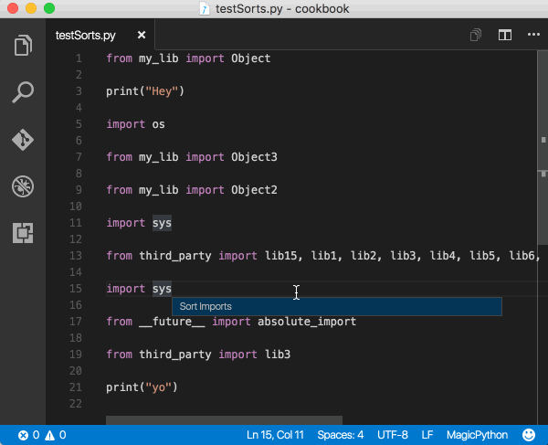

背景
随着博主越来越频繁的使用Vscode做Python开发,发现这玩意儿是越来越顺手(微软大法牛啤),有的细节很实用,但是时间久了就容易忘了,故在此做个整理,而且会不断更新…
积累的干货
powershell的授权:
1 | 以管理员身份打开powershell |
Vscode用户配置:
1 | { |
Vscode插件推荐:
- Python(做Python开发必装!!!)
- autoDocstring
- Chinese (Simplified) Language Pack for Visual Studio Code
- Code Runner
- Gitlens
- Markdown All in One
- markdownlint
- One Dark Pro(一款主题)
- vscode-icons(文件图标主题)
Vscode断点调试:
- 调试控制台的使用
- Logpoints(在调试不能暂停或停止的生产服务器时，日志点对于注入日志特别有用)

代码中变量和方法的重构技巧:
变量的重构:
方法一: 右键,选择提取变量
方法二: F1, Python Refactor: Extract Method.
方法三: 编辑自己的快捷键(python.refactorExtractVariable)
Note: 自定义快捷键的绑定方法,Ctrl+K Ctrl+S
方法重构:
方法一: 右键,选择提取方法
方法二: F1, Python Refactor: Sort Imports
方法三: 编辑自己的快捷键(python.refactorExtractMethod)
格式化import:
方法一: 右键,排序import语句
方法二: F1, Python Refactor: Sort Imports
方法三: 编辑自己的快捷键(python.sortImports)

Vscode常用快捷键
在编写代码时,能够将双手放在键盘上对于高生产率至关重要,VS代码有一组丰富的默认键盘快捷键，并允许您自定义它们
添加光标: Alt + Click 或者 Ctrl+Alt+Down / Ctrl+Alt+Up
- 该快捷键可能会被显卡占用

选择光标处的单词,接着按会再选择下一个相同的单词: Ctrl+D
选择光标出所有出现的单词: Ctrl+Shift+L
快速缩小或展开当前选择: Shift+Alt+Left / Shift+Alt+Right
多列选择: Shift+Alt
在整个项目搜索文件(支持正则表达式): Ctrl+Shift+F
高级搜索: Ctrl+Shift+J
智能感知: 默认ctrl+space(但是被Windows占用),建议将其修改为ctrl+alt+space(command: “editor.action.triggerSuggest”)
格式化整个文档: Shift+Alt+F
格式化选中部分: Ctrl+K Ctrl+F
Note:
Auto Docstring: Docstring Format 选择google样式
折叠:
- 在光标处折叠最内侧未折叠的区域: Ctrl+Shift+[
- 在光标处展开折叠区域: Ctrl+Shift+]
- 在光标处折叠最内侧未折叠的区域以及该区域内的所有区域: Ctrl+K Ctrl+[
- 展开光标处的区域以及该区域内的所有区域: Ctrl+K Ctrl+]
- 折叠编辑器中所有区域: Ctrl+K Ctrl+0
- 在编辑器中展开所有区域: Ctrl+K Ctrl+J
- 折叠级别X的所有区域，当前光标位置的区域除外: Ctrl+K Ctrl+2 for level 2
- 折叠以块注释标记开头的所有区域: Ctrl+K Ctrl+/
缩进:
1 | "editor.insertSpaces": true, |
全局文件编码设置:
1 | "files.encoding": "utf-8" |
编辑器与窗口相关:
跳转到指定代码行: Ctrl+G
打开一个新Code: Ctrl+Shift+N
编辑器里窗口间的切换: Ctrl+Tab
移动当前窗口到 左/右 编辑器里: Ctrl+Alt+Left / Right
编辑器换位置: Ctrl+k然后按Left或Right
格式调整:
上下移动一行： Alt+Up / Alt+Down
上下复制一行: Alt+Shift+Up / Alt+Shift+Down
在当前行 下边/上面 插入一行: Ctrl+Enter / Ctrl+Shift+Enter
侧边栏:
打开资源: ctrl+shift+E
打开搜索: ctrl+shift+F
打开git: ctrl+shift+G
打开调试: ctrl+shift+D
打开扩展: ctrl+shift+X
隐藏侧边栏: Ctrl+B
光标:
移动到行首：Home
移动到行尾：End
移动到文件结尾：Ctrl+End
移动到文件开头：Ctrl+Home
选中当前行: Ctrl+i
选择从光标到行尾: Shift+End
选择从行首到光标处: Shift+Home
选择光标所在单词: Shift+Alt+Left/Shift+Alt+Right
控制台:
打开控制台: Ctrl+`
打开控制台并新建一个Terminal: Ctrl+Shirt+`